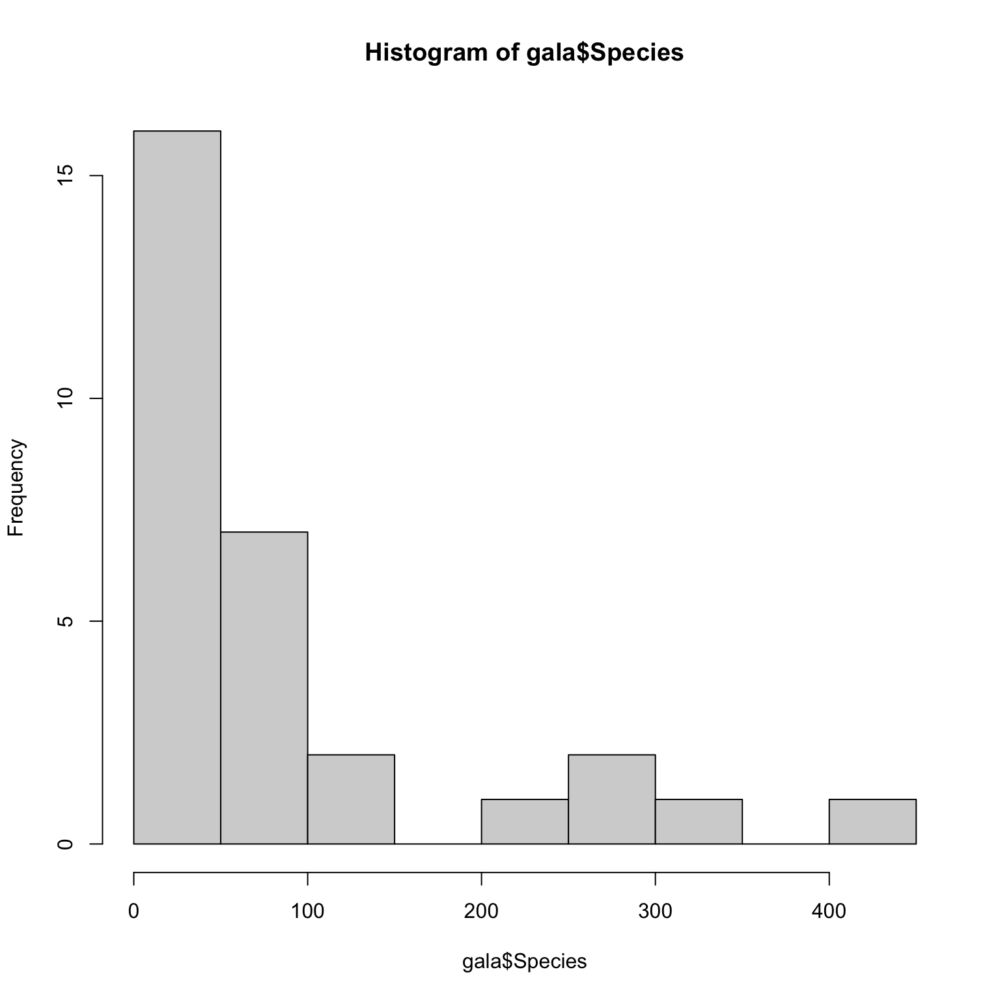

Introduction
© Copyright 2021 UNSW Sydney. All rights reserved except where otherwise stated.
This chapter, and the two chapters that follow it, are closely based on the first set text for the HDAT9600 course: Julian J. Faraway. Linear Models using R. 2nd Edition. CRC Press. This text is referred to as Faraway LMwR in these notes. Although you are encouraged to use this text for additional readings if you wish, this is not essential — these notes have abstracted all the salient points from this text for the content covered by this course.
1. Nomenclature
Linear regression models are mathematical models used to characterise, investigate and/or explain the relationship between:
- a single outcome variable, \(Y\), which is variously called the response, outcome, output, label (in machine learning contexts) or the dependent variable; and
- one or more variables \(X_1, ..., X_p\), where p is the number of such variables, which are variously called predictor, explanatory, inputs, features (again, in machine learning contexts) or independent variables.
Which nomenclature is used tends to depend on the field or discipline, but there is a lot of cross-over. In general it is better to avoid using the terms dependent and independent due to confusion with the other statistical uses of these terms, meaning correlated or uncorrelated respectively.
The term regression analysis is often used to refer to the fitting of linear models to data, although it also encompasses non-linear models.
The term regression stems from the work of Francis Galton, who was a half-cousin of Charles Darwin, and who coined the term regression to mediocrity in 1875. Galton used a form of linear model to investigate the relationship between the heights of parents and their offspring, which he termed “the regression effect”. The “regression” term came to be applied to all linear models, and then to non-linear and generalised linear models as well. As such, the term is somewhat archaic, but nonetheless still widely used, and we still speak of “regressing X on Y” and “fitting regression models to data”. “Statistical models” is probably a better, more modern term to use (and hence the name for this course).
When there is only one X variable (that is, p = 1), then the term simple regression is sometimes used, but when p > 1, then the term multiple regression or multivariate regression is used. Multivariable regression is sometimes (confusingly) used to refer to regressions involving more than one outcome or response variable, but again it is better to avoid this term.
In linear regression, which we will be examining in chapters 2, 3 and 4 of this course, the outcome or response variable (we will mainly use outcome variable henceforth) must be a continuous variable - that is, a variable that can take an infinite number of ordered values, as opposed to a discrete variable that can only take a finite number of values. That doesn’t mean that the outcome variable can’t be be constrained - for example, the heights of people is a continuous variable (subject to the limits of resolution of the measurement apparatus used to ascertain height), but no-one has a negative height, nor does anyone have a height greater than 3 metres.
Explanatory (predictor) variables in a linear (and other) regression model do not have to be continuous - they can be continuous, discrete (eg integers) or categorical (qualitative). If all the predictors are categorical, then the term analysis of variance (ANOVA) is often used, and if the predictors are a mixture of categorical and continuous variables, then the term analysis of covariance (ANCOVA) is sometimes used, although both of these are just special cases of linear regression. We will cover these briefly in a later chapter, because they use some special terminology that you will almost certainly encounter at some stage.
Quiz
2. The purposes of statistical (regression) models
There are two types of objective for regression models:
- prediction of future or unseen outcomes (responses) given specified or known values of predictor variables;
- explanation or characterisation of the relationship between explanatory variables and the outcome, often with a view to making inferences about hypothesised causal relationships.
A given regression model may serve both objectives, although when specifying, fitting and testing models, different appraoches may be taken depending on which of these two objectives, prediction or explanation, is most important. Of course, it is possible to fit more than one model to a particular data set, and it may be that distinct models are required to best achieve each of these objectives.
It is also worth bearing in mind the aphorism attributed to George Box:
All models are wrong, but some are useful.
3. Definition of the linear model
If we want to model an outcome (response) Y in terms of, say, three predictors, \(X_1\), \(X_2\), and \(X_3\), a very general form for the model might be:
\[ Y = f(X_1, X_2, X_3) + \epsilon \]
where \(f()\) is some function and \(\epsilon\) is the irreducible error (meaning that it is unavoidable “noise” and cannot be explained by any function of the predictor variables — of course, the “error” may be explainable, at least in part, by unobserved variables — other things that we don’t have information about).
However, in this definition, the function \(f()\) can take an infinite number of forms, and just three predictor variables will not be enough to estimate what its form actually is. Thus, in practice we restrict the form that the function \(f()\) can take, and in a linear model, \(f()\) is a linear function of the predictor variables, such as:
\[ Y = \beta_0 + \beta_1X_1 + \beta_2X_2 + \beta_3X_3 + \epsilon \] where \(\beta_i, i = 0,1,2,3\) are unknown parameters. Note the statistical use of the term parameter here to refer to the \(\beta_i\) co-efficients — in engineering or computer science, the term parameters is often used to refer to the variables, \(X_1...X_3\) in our equation. Also note that the \(\beta_0\) parameter has a special name in statistics, the intercept term, or just the intercept for short.
So, by restricting the possible form of our model function like this, we only need to estimate four unknown parameters (\(\beta_0...\beta_3\)) from our data (which comprises \(Y\) and \(X_1...X_3\) in this example). This makes estimation of our model much easier, as we shall see.
Linear models must have linear parameters, not linear predictor variables
The strictly linear form of our model perhaps seems a bit too restrictive, since it would seem to imply a purely linear relationship between our predictors and the outcome, but in fact, it is not that constrained. The reason is that in a linear model, only the parameters enter the model equation linearly — the predictors themselves do not need to be linear.
For example, this is also a linear model:
\[ Y = \beta_0 + \beta_1X_1 + \beta_2log(X_2) + \beta_3X_1X_2 + \epsilon \]
but this is not a linear model:
\[ Y = \beta_0 + \beta_1X_1^{\beta_2} + \epsilon \]
Thus, linear models are a lot more flexible than many people assume, and they can readily model non-linear relationships between predictors and outcome variables.
Where do linear models come from?
This is a reasonable question. Do they just magically spring from the mind of the data scientist, or are there principles and methods for creating them?
In general, there are three ways a linear (or any) statistical model might be created:
- Based on some known or well-understood physical, chemical, economic or even social theory. For example, Hooke’s law states that the extension of a spring is proportional to the weight attached to it and thus it can be modelled with a linear model of the form:
\[ Y = \beta_0 + \beta_1X_1 + \epsilon \] where \(Y\) is a vector of measured lengths of the spring, \(\beta_0\) is the length of the spring at rest without any weight attached, \(X_1\) is a vector of weights attached to the spring, and \(\epsilon\) is the (possible quite small) random error that is inevitable whenever any experimental apparatus is repeatedly measured.
Experience with past data — if particular forms of model fitted similar data quite well in the past, it is natural to try such models again.
Using heuristics — no definitive theory or prior idea of what form the model should take exists, and thus trial-and-error is used to try to arrive at a satisfactory model.
Quiz
4. Matrix representation of linear models
Although we will not delve too deeply into the matrix algebra involved in fitting linear models to data, it is nonetheless useful to review the mathematical matrix representation of our data.
If we have data which contains an outcome variable Y and three predictors \(X_1\), \(X_2\) and \(X_3\), we can represent it in tabular form like this:
\[ \begin{matrix} y_1 & x_{11} & x_{12} & x_{13} \\ y_2 & x_{21} & x_{22} & x_{23} \\ \vdots & \vdots & \vdots & \vdots \\ y_n & x_{n1} & x_{n2} & x_{n3} \\ \end{matrix} \]
where n is the number or observations (cases, rows) in the dataset.
We have seen that we can write a linear model to fit these data as:
\[ y_i = \beta_0 + \beta_1x_{i1} + \beta_2x_{i2} + \beta_3x_{i3} + \epsilon_i \]
where \(i = 1, ..., n\).
This can also be more compactly written using matrix/vector representaton:
\[ \mathbf{y} = \mathbf{X\beta} + \epsilon \]
where \(\mathbf{y} =(y_1,...,y_n)^T, \epsilon = (\epsilon_1, ..., \epsilon_n)^T, \beta = (\beta_0,...,\beta_3)^T\) and :
\[ \mathbf{X} = \begin{pmatrix} 1 & x_{11} & x_{12} & x_{13} \\ 1 & x_{21} & x_{22} & x_{23} \\ \vdots & \vdots & \vdots & \vdots \\ 1 & x_{n1} & x_{n2} & x_{n3} \end{pmatrix} \]
Note that the column of ones incorporates the intercept term, \(\beta_0\). We’ll explore the interpretation of the intercept term, and the other parameter estimates, in the next chapter.
With this notation, the simplest model we can represent is the null model, also sometimes called an intercept-only model, which has no predictors and just the overall mean plus the errors \(y = \mu + \epsilon\):
\[ \begin{pmatrix} y_1 \\ \vdots \\ y_n \end{pmatrix} = \begin{pmatrix} 1 \\ \vdots \\ 1 \end{pmatrix} \mu + \begin{pmatrix} \epsilon_1 \\ \vdots \\ \epsilon_n \end{pmatrix} \]
Note that \(E(\epsilon) = 0\), that is, the expectation (mean) of the errors is zero - otherwise, any non-zero expectation of the errors could just be absorbed into (added to) the mean \(\mu\) to get a zero expectation of \(\epsilon\).
5. Estimation of \(\beta\)
The regression model \(\mathbf{y} = \mathbf{X\beta} + \epsilon\) partitions the outcome variable \(\mathbf{y}\) into a systematic component \(\mathbf{X\beta}\) and a random component \(\epsilon\). To fit the model to our data, we need to find values for \(\beta\), which, remember, is a vector of parameters \((\beta_0,...,\beta_3)^T\), such that \(\mathbf{\beta}\) explains as much of the variation in the outcome variable as possible.
If we consider this geometrically, the outcome \(\mathbf{y}\) lies in an n-dimensional space, while \(\mathbf{\beta}\) lies in a p-dimensional space, where p is the number of predictors (including the intercept).
The problem is to find the vector \(\mathbf{\beta}\) (that is, all the \(\mathbf{\beta}\) estimates for the model, \(\beta_0,...,\beta_3\)), such that \(\mathbf{X\beta}\) (that is, the linear summation of the matrix of all the predictor data, \(\mathbf{X}\), multiplied by the vector of \(\mathbf{\beta}\) estimates) is as close to \(\mathbf{y}\) (the vector of outcomes) as possible. The best choices for \(\mathbf{\beta}\) are known as the \(\mathbf{\beta}\) estimates, or the regression co-efficients, and are denoted \(\mathbf{\widehat{\beta}}\). The responses or outcomes predicted by the model, also known as the predicted or fitted values, are denoted \(\mathbf{\widehat{y}} = \mathbf{X\widehat{\beta}}\). The difference between the actual outcome (response) and the predicted outcome is called the residual (or the residuals) and is denoted \(\widehat{\epsilon}\).
Put another way, the purpose of the model is to represent, as accurately as possible given the inherent limitations of the model, something complex, y, which is the outcome (response) data and which is n-dimensional (where n is the number of observations or rows in our data set), in terms of something much simpler: the model, which is p-dimensional, where p is the number of parameters in our model. In a successful model, the essential structure of our data should be captured in the p dimensions, leaving just purely random variation in the residuals \(\widehat{\epsilon}\) which lie in an (n - p)-dimensional space.
Thus we have:
| \ | \ | \ | \ | |||||
|---|---|---|---|---|---|---|---|---|
| Data | \ | = | \ | Systematic structure | \ | + | \ | Random variation |
| n dimensions | \ | = | \ | p dimensions | \ | + | \ | (n - p) dimensions |
So, how do we estimate \(\beta\)?
6. Least squares estimation
Oh no, maths!
This section contains quite a bit of maths. Don’t skip it, but don’t worry if you don’t follow every step along the way — you won’t be examined or assessed on your understanding of it. We have included it to reinforce the point that statistical model fitting is not some kind of magic, and that the steps involve make both mathematical and intuitive sense.
The oldest and still widely-used method of estimating \(\beta\) for linear models is the least squares method, also known as ordinary least squares or OLS.
Recall that we can write our linear model as:
\[ y = X\beta + \epsilon \]
where we additionally assume that \(\epsilon\) has a normal distribution with mean zero and variance I:
\[ \epsilon \thicksim N(0, I) \]
For some estimate of the model’s parameters, \(\widehat{\beta}\), the model’s prediction errors, \(\epsilon\), also known as the residuals, are:
\[ \widehat{\epsilon} = \mathbf{y} - \mathbf{X\widehat{\beta}} \]
We define the best estimate of \(\beta\) as the one which minimises the sum of the squared errors:
\[ \begin{align} \sum{\epsilon_i^2} = \epsilon^T\epsilon &= (y - X\beta)^T(y - X\beta) \\ &= y^Ty - y^T(X\widehat{\beta}) - (X\widehat{\beta})^Ty + (X\widehat{\beta})^T(X\widehat{\beta}) \\ &= y^Ty - (X\widehat{\beta})^Ty - (X\widehat{\beta})^Ty + (X\widehat{\beta})^T(X\widehat{\beta}) \\ &= y^Ty - 2(X\widehat{\beta})^Ty + (X\widehat{\beta})^T(X\widehat{\beta}) \\ &= y^Ty - 2\widehat{\beta}^TX^Ty + \widehat{\beta}^TX^TX\widehat{\beta} \\ \end{align} \]
To determine the parameters, \(\widehat{\beta}\), we minimize the sum of squared residuals with respect to the parameters, by setting them to zero, and taking the derivative with respect to \(\beta\). We find that \(\widehat{\beta}\) satisfies:
\[ X^TX\widehat{\beta} = X^Ty \]
These are called the normal equations.
Why are they called the normal equations?
The use of the term normal in normal equations is nothing to do with the normal probability distribution. Rather, normal is here as a bit of jargon from linear algebra — \(X^TX\) is a normal matrix and \(y - \widehat{\beta}X\) is normal to the range of \(X\).
Now, provided that \(X^TX\) is invertible (recall matrix inversion from Chapter 1), we can do some re-arrangment to obtain the results:
\[ \begin{align} \begin{split} \widehat{\beta} & = (X^TX)^{-1}X^Ty \\ X\widehat{\beta} & = X(X^Tx)^{-1}X^Ty \\ \widehat{y} & = Hy \end{split} \end{align} \]
where \(H = X(X^TX)^{-1}X^T\) and is called the hat matrix. Geometrically it is the orthogonal projection of y onto the space spanned by X (that statement will make more sense if have you watched the 3Blue1Brown videos mentioned in Chapter 1). The hat matrix is an \(n \times n\) matrix, where \(n\) is the number of observations (cases) in the dataset, and thus it can be rather large for some larger datasets. However, the hat matrix \(H\) can be used to calculate several useful quantities.
The predicted values (also often called the fitted values) of y from the model are \(\widehat{y} = Hy = X\widehat{\beta}\).
The residual sum of squares (RSS) is \(\widehat{\epsilon}^T\widehat{\epsilon} = y^T(I - H)^T(I - H)y = y^T(I - H)y\). In words, the RSS is the sum of the squares of the differences between each value of y and each corresponding predicted value of y. This difference is very often referred to by the shorthand name of “the error” or “the errors”.
It can be shown mathematically that this least squares estimate is the best possible estimate of \(\beta\) when the errors \(\epsilon\) are uncorrelated and have equal variance. This assumption is often called the i.i.d. (or iid) assumption, standing for independent and identically distributed, meaning that each observation (row, case) has no effect on or relationship to other observations (independence) and that their errors (their non-systematic, random variation components) all have the same variance, a property also known as homoscedasticity.
Under i.i.d. circumstances, \(\widehat{\beta}\) is an unbiased estimator and has variance \((X^TX)^{-1}\sigma^2\) (provided that \(\textrm{var} \epsilon = \sigma^2I\) — that is, that the errors have equal variance). Because \(\widehat{\beta}\) is a matrix, its variance is also a matrix.
We also need to estimate \(\sigma^2\). Recall that n is the number of observations (cases) in the dataset, and p is the number of estimator variables in the model being fitted. It can be shown that an unbiased estimator of \(\sigma^2\) is:
\[ \widehat{\sigma}^2 = \frac{\widehat{\epsilon}^T\widehat{\epsilon}}{n - p} = \frac{\textrm{RSS}}{n - p} \]
\(n - p\) is called the degrees-of-freedom (often without the hyphens) of the model, usually abbreviated to just df.
Finally, the standard error for a particular predictor variable (the \(i\)th predictor variable) in \(\widehat{\beta}\) is:
\[ se(\widehat{\beta}_{i}) = \sqrt{(X^TX)_{ii}^{-1}}\widehat{\sigma} \]
Phew! Enough maths for now…
7. A practical example
Let’s examine the example provided by Faraway, which concerns the numbers of species of animals found on various of the Galápagos Islands (which were made famous by Charles Darwin). It isn’t a health-related dataset, but it is nicely suited to exploration of these inital concepts, so we will make use of it. In the dataset there are 30 observations (each observation is an island) and seven variables. We can load the data set and examine the first six rows thus:
data(gala, package="faraway")
head(gala)The row names are the names of each island in the Galápagos group, the Species column is the number of species found on each island, Area is the area of each island in square kilometers, Elevation is the highest point of the island in metres, Nearest is the distance from the nearest island, in kilometres, Scruz is the distance in kilometres from the main island of Santa Cruz, Adjacent is the area of the nearest island in square kilometres. Endemics is the number of endemic species on each island, but we won’t use that variable in this example.
We can fit a linear model to these data using the lm() function that come with base \(\textsf{R}\). The model can be specified as arguments to this function in two different ways, but the easiest to use is the formula interface, as shown below. Notice that Species is our outcome variable (y) and appears to the left of the tilde (~), while our predictor variables are specified to the right of the tilde. Notice also that we assign the name lmod to the output object of this model. The output object is actually a list of values relating to the model, but we can get a convenient print-out of some of those values using the summary() function on the model output object.
So, the code looks like this — run it and examine the output:
lmod <- lm(Species ~ Area + Elevation + Nearest + Scruz + Adjacent, data=gala)
summary(lmod)There are quite a few results reported in this output, and we’ll examine them in more detail later, but for now, notice the Estimate column, which lists the \(\widehat{\beta}\) estimates for each predictor variable, with (Intercept) being the estimate of \(\beta_0\).
In real life, we would have done EDA first…
In real life, we would have thoroughly explored our dataset first by performing an exploratory data analysis (EDA), visualising a) the distribution of each of the variables in it in a univariate fashion, and b) looking at the relationships between pairs of variables. Remember we are not only interested in bivariate analyses of each predictor variable and the outcome, but also bivariate analysis of each pair of predictors themselves. This latter point is important in detecting potential collinearity (which we will discuss in the next chapter).
We are omitting this absolutely essential EDA step in this example, as we have a lot of material to cover, but don’t skip it in real life! As a reminder of the EDA importance, we will practice this in Chapter 2 assessable exercise.
Aside: have a look at this Datasaurus graph to convince yourself of the importance of graphing your data.
The lm() function conveniently calculates almost everything we might need when fitting a linear model, using the best practice calculation methods for model fitting (discussed below). Nonetheless, we can also calculate \(\beta\) estimates ourselves, if we wish. Let’s do that now.
First, we can extract the matrix of predictors, X, using the model.matrix() function:
lmod <- lm(Species ~ Area + Elevation + Nearest + Scruz + Adjacent, data=gala)X <- model.matrix(lmod)
Xand the outcome y:
y <- gala$Species
ySo, referring back to the formulas \(\widehat{\beta} = (X^TX)^{-1}X^Ty\), we first calculate \((X^TX)^{-1}\). Recall from HDAT9600 Chapter 1 material that t() returns the transpose of a matrix (i.e t(X) returns \(X^T\)), that %*% does matrix multiplication, and solve(a) returns \(a^{-1}\). Thus we can calculate \(\widehat{\beta}\) using \((X^TX)^{-1}X^Ty\):
X <- model.matrix( ~ Area + Elevation + Nearest + Scruz + Adjacent, data=gala)
y <- gala$Species
xtxi <- solve(t(X) %*% X)Now calculate \((X^TX)^{-1}\):
xtxi <- solve(t(X) %*% X)
xtxiNow we can get \(\widehat{\beta}\) directly, using \((X^TX)^{-1}X^Ty\):
betahat <- xtxi %*% t(X) %*% y
betahatNotice that our betahat estimates are identical to those returned by the lm() function (scroll back up to compare)!
Under the bonnet…
In fact, the lm() function uses a much more robust method of calculating the \(\widehat{\beta}\) estimates, called QR decomposition, which is much less sensitive to tiny calculation errors when there is a high degree of collinearity between the predictors (that is, when the matrix is almost singular), and is thus numericlly more stable. In general you should always use the lm() function for this reason, but for “well-behaved” data such as this data set, the results are identical. But mathematically, the QR decomposition is equivalent to the calculations we have performed above.
There a quite a few other useful quantities contained in the object returned by the lm() function, and even more useful quantities can be found in the object returned by summary() when called on a linear model output object.
We can use the names() function to see the names of all the values stored in the model results object returned by the lm() function, as well as the names of all the values calculated when we use the summary() function on the model results object:
lmod <- lm(Species ~ Area + Elevation + Nearest + Scruz + Adjacent, data=gala)
lmodsum <- summary(lmod)names(lmod)lmodsum <- summary(lmod)
names(lmodsum)There are also a set of functions that will extract commonly-used quantities from the model object: residuals() extracts the residuals, fitted() returns fitted values (discussed more in the next chapter), df.residual() gives the degrees-of-freedom, deviance() returns the RSS, and coef() gives the \(\widehat{\beta}\) estimates.
Thus, we can, for example, obtain an estimate of \(\sigma\) for the model:
lmodsum$sigmaAnd we can, for example, get the standard errors for the coefficients:
# examine the coefficients object in the model summary object
lmodsum$coefficients
class(lmodsum$coefficients)
# the standard errors are the second column
lmodsum$coefficients[,2]
# the coef() function on the model object also returns the coefficients
coef(lmod)Quiz
Choose which of the following is correct:
- In a linear regression model, the regression co-efficients are denoted \(\mathbf{\widehat{\alpha}}\). The responses or outcomes predicted by the model, also known as the predicted or fitted values, are denoted \(\mathbf{\widehat{x}} = \mathbf{X\widehat{\beta}}\). The difference between the actual outcome (response) and the predicted outcome is called the residual (or the residuals) and is denoted \(\widehat{\beta}\).
- In a linear regression model, the regression co-efficients are denoted \(\mathbf{\widehat{\epsilon}}\). The responses or outcomes predicted by the model, also known as the predicted or fitted values, are denoted \(\mathbf{\widehat{\beta}} = \mathbf{X\widehat{y}}\). The difference between the actual outcome (response) and the predicted outcome is called the residual (or the residuals) and is denoted \(\widehat{\alpha}\).
- In a linear regression model, the regression co-efficients are denoted \(\mathbf{\widehat{\beta}}\). The responses or outcomes predicted by the model, also known as the predicted or fitted values, are denoted \(\mathbf{\widehat{y}} = \mathbf{X\widehat{\beta}}\). The difference between the actual outcome (response) and the predicted outcome is called the residual (or the residuals) and is denoted \(\widehat{\epsilon}\).
- In a linear regression model, the regression co-efficients are denoted \(\mathbf{\widehat{\gamma}}\). The responses or outcomes predicted by the model, also known as the predicted or fitted values, are denoted \(\mathbf{\widehat{\epsilon}} = \mathbf{Y\widehat{\beta}}\). The difference between the actual outcome (response) and the predicted outcome is called the residual (or the residuals) and is denoted \(\widehat{\delta}\).
8. Gauss-Markov theorem
We have seen that the ordinary least squares (OLS) estimator of \(\widehat{\beta}\) is plausible, but there are actually several reasons to use it:
- It makes sense geometrically as an orthogonal projection onto the model space.
- If the errors are independent and identically (normally) distributed, the OLS estimate of \(\widehat{\beta}\) is also the maximum likelihood estimator (we demonstrate this later in this chapter). Recall from the HDAT9200 Statistical Foundations course that the maximum likelihood estimate is the value(s) of a parameter estimate(s), in this case \(\beta\), that maximises the probability of the data that was actually observed.
- The Gauss-Markov theorem states that \(\widehat{\beta}\) is the best linear unbiased estimate (abbreviated as “BLUE”).
We won’t be going through the details of the Gauss-Markov theorem here (those who are interested can find details in section 2.8 of Faraway LMwR). It suffices to know that the theorem shows that the OLS estimate \(\widehat{\beta}\) is a good choice, provided that the errors have a normal distribution, are uncorrelated and are of equal variance (that is, that they are i.i.d).
The corollary is that when these conditions do not apply, then we should consider using alternative estimators to fit our model:
- When the errors are correlated or have unequal variance, generalised least squares (GLS) should be used. We will look at GLS estimation in a later chapter of this course.
- When the error distribution is not normal, such as when it has a long tail, then robust estimates could be useful - we’ll also briefly cover this in a later chapter of this course, and/or for inference we should use permutation tests and/or bootstrap estimation (we look at this later in this chapter).
- When the predictors are highly correlated (that is, they are collinear), then so-called biased estimators such as ridge regression, might be preferable to OLS estimation. We touch on this in a later chapter.
Normally-distributed errors, not normally-distributed data
Note that the assumption is that the errors in the outcome (response) are normally-distributed, conditioned on the predictors \(X\), not that the outcome variable (or the predictor variables) are themselves normally-distributed.
What does that mean? In other words, the distribution of \(y\) may be quite non-normal but the assumptions for OLS may still be met, as long as the distribution of the errors for \(Y\) are normally distributed. Look at the distribution of the outcome variable in our gala dataset — it is definitely not normal!
hist(gala$Species, breaks = 15)
But that’s OK — the data do not need to be normally distributed — as long as the errors, \(\epsilon\), are normally distributed. We’ll look at better ways of to check that in a later chapter, but we can easily visualise the residuals (errors) like this:
# examine the residuals
hist(residuals(lmod), breaks = 15)Now, that distribution is not normal, but there are only 30 observations in the dataset, and you can at least see that the distribution is roughly symmetrical, centered around zero, with more density in the middle - quite different to the distribution of the \(y\) variable itself, as we saw above. You could convince yourself that if there were more data, then the errors would indeed have a normal distribution with a mean of zero.
9. Goodness of fit
So far, we have fitted a linear model to our data, but it would be useful to have a measure or indication of how well it fits the data. The \(R^2\) metric, more properly known as the coefficient of determination, or more usefully, the percentage of variance explained, is most commonly used. In the formula below, RSS stands for Residual Sum of Squares and SS for Sum of Squares.
\[ R^2 = 1 - \frac{\sum{(\widehat{y}_i - y_i)^2}}{\sum{(y_i - \bar{y})^2}} = 1 - \frac{\textrm{RSS}}{\textrm{Total SS (Corrected for Mean)}} \]
In words, this equation states that the \(R^2\) is one minus the sum of all the squared differences between each value of the outcome variable \(y_i\) and each estimate of the outcome variable, \(\widehat{y}_i\) as given by our fitted model, divided by the sum of all the squared differences between each value of the outcome variable \(y_i\) and the overall mean of \(y\).
The range of \(R^2\) is therefore from zero to one — that is, \(0 \le R^2 \le 1\) — with values closer to one indicating better fit of the model to the data.
This can be visualised graphically as follows (this example is reproduced from the wikipedia page on the coefficient of determination:

In the image above, the data points are shown as black dots. On the left, in red, we have the squared residuals with respect to the mean of y, and on the right, we have squared residuals with respect to our model estimates (denoted f). It can be seen that the closer our model fits to the actual data points, the smaller the squared residuals will be, and thus the closer \(R^2\) will be to 1.
Note that for a simple linear model with only one predictor, x, then \(R^2\) equals the correlation between x and y.
This raises the question: what is a good or an acceptable value for \(R^2\)?
The answer really depends on the use of the model. In physics and engineering, where data are often derived from closely controlled experiments and measurements can be precisely taken, \(R^2\) values of 0.6 or higher are routinely expected, whereas in health research, social sciences and many areas of biology, an \(R^2\) value of 0.6 would be considered good and lower values would still be accepted as an indication of adequate fit.
However, it is a mistake to rely solely on \(R^2\) as a measure of goodness-of-fit, or rather, of the adequacy of your model. The following code is taken from the R manual (help) page on anscombe, and refers to Anscombe’s quartet, which is four datasets created by Francis Anscombe, each with the same traditional ststistical properties (Anscombe, Francis J. (1973). Graphs in statistical analysis. The American Statistician, 27, 17–21. doi: 10.2307/2682899.).
Let’s examine the quartet. Each dataset has an x variable (\(x_1\) to \(x_4\)) and a y varable (\(y_1\) to \(y_4\)). Here is a summary:
summary(anscombe)Notice that the summary statistics for each of the four datasets suggest that they are all very similar to each other.
Now let’s fit a linear model to each dataset. This requires a bit of manipulation of the data due to the way it is stored by default as a built-in dataset in \(\textsf{R}\). Don’t worry too much about the details of this code, although you should be able to work out what it is doing:
# define the (simple) regression formula as ff
ff <- y ~ x
# create a list called mods to hold the model results
mods <- setNames(as.list(1:4), paste0("lm", 1:4))
# loop over the four datasets in the quartet
for(i in 1:4) {
# substitute the numbered variable names in the regression formula
ff[2:3] <- lapply(paste0(c("y","x"), i), as.name)
## or ff[[2]] <- as.name(paste0("y", i))
## ff[[3]] <- as.name(paste0("x", i))
# fit the linear model to each of the four datasets,
# and store results in mods
mods[[i]] <- lmi <- lm(ff, data = anscombe)
# print out a summary of each model
cat(paste("----- Anscombe dataset",i,"-----"))
print(summary(lmi))
}If you examine the summary of the model for each of the four datasets, you will see that the \(R^2\) and the parameter estimates are all almost identical.
We can make it easier to compare the results — this is a good example of how useful it can be to manipulate regression model results using code.
# define the (simple) regression formula as ff
ff <- y ~ x
# create a list called mods to hold the model results
mods <- setNames(as.list(1:4), paste0("lm", 1:4))
# loop over the four datasets in the quartet
for(i in 1:4) {
# substitute the numbered variable names in the regression formula
ff[2:3] <- lapply(paste0(c("y","x"), i), as.name)
## or ff[[2]] <- as.name(paste0("y", i))
## ff[[3]] <- as.name(paste0("x", i))
# fit the linear model to each of the four datasets,
# and store results in mods
mods[[i]] <- lmi <- lm(ff, data = anscombe)
}## See how close they are (numerically!)
sapply(mods, coef)
lapply(mods, function(fm) coef(summary(fm)))Based on that information, you could be forgiven for thinking that the each model fits each dataset equally well. But you would be wrong! Now let’s look at plots of each of the four datasets in the quartet, with the linear regression models overlaid in blue on each:
op <- par(mfrow = c(2, 2), mar = 0.1+c(4,4,1,1), oma = c(0, 0, 2, 0))
for(i in 1:4) {
ff[2:3] <- lapply(paste0(c("y","x"), i), as.name)
plot(ff, data = anscombe, col = "red", pch = 21, bg = "orange", cex = 1.2,
xlim = c(3, 19), ylim = c(3, 13))
abline(mods[[i]], col = "blue")
}
mtext("Anscombe's 4 Regression data sets", outer = TRUE, cex = 1.5)
par(op)Oh dear! This underlines the importance of always carrying out a thorough exploratory data analysis (EDA) on your data before proceeding to fit regression models. From these plots, it is clear that linear models are only really appropriate for the first (x1) and third (x3) of the four datasets, although there is also clearly an outlier data point in the x3 dataset (we will consider the effect of outliers on regression models in a later chapter).
There are two more key regression modelling concepts which we will touch on in this chapter: identifiabilty and orthogonality.
10. Identifiabilty
Identifiability is a key concept for regression modelling, and underlines the inescapable truth that it is not possible to fit a statistical model to any and every dataset. Here is the mathematical explanation of why.
We’ve seen that the least squares estimate of \(\widehat{\beta}\) is the solution to the normal equations:
\[ X^TX\widehat{\beta} = X^Ty \] where \(X\) is an \(n \times p\) matrix of \(n\) rows of observations and \(p\) columns of predictor variables.
If \(X^TX\) is singular and thus cannot be inverted, then there will be an infinite number of solutions to the normal equations, and thus the estimates in \(\widehat{\beta}\) are at least partially unidentifiable — that is, they cannot be reliably estimated. Unidentifiability will occur when \(X\) is not of full rank — that is, when its columns are linearly dependent (also called collinear).
Here are some examples, taken from LMwR, of how that might arise:
- A person’s height is measured in both centimetres and metres, and both are mistakenly entered as predictor variables into the model. In this case, one variable is just a multiple of the other.
- For patients admitted to intensive care units (ICUs) during a stay in hospital, we record the number of days in hospital prior to their admission to ICU, the number of days they stayed in ICU, the number of days in hospital after they left the ICU, and their total length of stay in hospital (including their stay in ICU). There is an exact linear relationship between these four variables (total length of stay in hospital is the sum of the other three variables), and thus if all four of these variables are entered into the model, it will be unidentifiable.
- If we have more variables than observations (cases) — that is, if p > n. When p = n, we may be able to estimate all the parameters (\(\widehat{\beta}\)), but with no degrees of freedom left to estimate any standard errors or do any hypothesis testing or inference (covered in the next few sections). Such a model, where p = n, is called saturated. When p > n, the model is sometimes called supersaturated. A typical scenario in which this occurs is in bioinformatics, where chips are used to measure the actvity of thousands of genes, but usually only in hundreds of samples (because each chip, which can test just one sample, is quite costly). OLS models are completely unsuitable for such data, and other approaches are required.
When dealing with observational data, identifiability problems such as these can often be avoided simply by taking care when constructing models and paying close attention to potential linear dependence of one predictor variable on another. However, sometimes it isn’t obvious!
Identifiability problems often occur in designed experiments, and need to be avoided by imposing constraints as part of the design of the experiment. A detailed discussion of the design of experiments is beyond the scope of these notes.
Unfortunately, different statistical software packages handle nonidentifiability in different ways. When trying to fit unidentifiable regression models, some may raise error messages and refuse to fit the model, while others may still manage to fit a model due to rounding errors in the internal calculations (this is less common these days with the use of 64-bit computers and operating systems, but was common in decades past when 16-bit or 32-bit numeric values were used for calculations, and small numerical errors often accumulated during calculations). In other cases, the statistical software may apply constraints to the data in an attempt to fit a model which would otherwise be nonidentifiable. By default, \(\textsf{R}\) fits the largest identifiable model that it can by removing variables in the reverse order in which they appear in the model formula. Let’s look at an example of this behaviour.
Returning to our Galápagos islands dataset, let’s create a new variable called Adiff, which is the difference in area between each island and its nearest neighbouring island, and add that to the linear model we fitted previously:
gala$Adiff <- gala$Area - gala$Adjacent
lmodn <- lm(Species ~ Area + Elevation + Nearest + Scruz + Adjacent + Adiff, data=gala)
summary(lmodn)If you examine the output of the summary() function carefully, you will see that it has issued a message:
Coefficients: (1 not defined because of singularities)
and that there is no estimate for the Adiff predictor variable, because \(\textsf{R}\) removed it from the model in an attempt to avoid nonidentifiability.
Recall that in Chapter 1 we saw the use of the rankMatrix() function from the Matrix package (which is built-in to \(\textsf{R}\)) to calculate the rank of a matrix. Let’s try it with the predictor variables used in the model above:
gala$Adiff <- gala$Area - gala$Adjacent
# create a matrix of the predictor variables entered into the model
X <- as.matrix(gala[,c("Area", "Elevation", "Nearest", "Scruz", "Adjacent", "Adiff")])
# find the rank of the matrix
Matrix::rankMatrix(X)[[1]]Note that we have 6 predictor variables in our model, but the rank of the matrix of those predictor variables is only 5. Thus, the model is not of full rank and hence it is nonidentifiable.
Often, revisiting the your EDA (exploratory data analysis) step which you undertook on the data before fitting any models will reveal the likely source(s) of such unidentifiablity. However, there are also systematic ways of searching of for linear combinations between predictor variables - in particular, an eigendecomposition of \(X^TX\) will reveal such linear relationships — see section 11.1 of Faraway LMwR for details.
However, you may also encounter mdels which are very close to being nonidentifiable. These can also be problematic, because the parameter (\(\widehat{\beta}\)) estimates may be unstable or inaccurate in such circumstances. Let’s simulate that situation with our gala datatset by adding a very small uniform random perturbation, at the fourth decimal place, to the Adiff variable which we created above, and then refit the model:
# add a very small random amount to the calculation of the Adiff variable to
# give us an Adiffe variable
gala$Adiffe <- (gala$Area - gala$Adjacent) + runif(nrow(gala), -0.0005, 0.0005)
lmodc <- lm(Species ~ Area + Elevation + Nearest + Scruz + Adjacent + Adiffe, data=gala)
summary(lmodc)Examine the output — notice that all the parameters are now estimated, and that \(\textsf{R}\) has not excluded the Adiffe variable, but the standard errors for all the parameters estimates, not just for Adiffe, are now very large. This is because they cannot now be estimated in a stable manner, because the model is very close to nonidentifiability.
In this case, of course, we artificially set up the model to have this problem. We will revisit this problem of collinearity (sometimes also called multicollinearity) in a subsequent chapter.
11. Orthogonality
Orthogonality is a useful property of data which we might be fitting a model to, because it allows us to interpret the effect of one predictor variable without regard to the other.
The mathematics of orthogonality
Suppose we have a dataset which has two predictors, \(X_1\) and \(X_2\) and that \(X_1^T X_2 = 0\) — that is, they are completely uncorrelated. We can write a regession equation:
\[ Y = X\beta + \epsilon = X_1\beta_1 + X_2\beta_2 + \epsilon \]
and, because \(X_1^T X_2 = 0\) (and therefore \(X_2^T X_2 = 0\)):
\[ X_TX = \begin{bmatrix} X_1^T X_1 & X_1^T X_2 \\ X_2^T X_1 & X_2^T X_2 \\ \end{bmatrix} = \begin{bmatrix} X_1^T X_1 & 0 \\ 0 & X_2^T X_2 \\ \end{bmatrix} \]
which means (recalling estimation of \(\widehat{\beta}\) using the normal equations mentioned above):
\[ \widehat{\beta}_1 = (X_1^TX_1)^{-1}X_1^Ty \qquad \widehat{\beta}_2 = (X_2^TX_2)^{-1}X_2^Ty \]
What this means is that \(\widehat{\beta}_1\) will be the same regardless of whether the other predictor variable \(X_2\) is in the model or not, and vice versa. Thus we can interpret the effect of \(X_1\) without any regard to \(X_2\). Note however that this decoupling is still not perfect, and very slight changes in the standard errors (SEs) for the \(\widehat{\beta}\) estimates may still occur — but the \(\widehat{\beta}\) estimates themselves will not change if \(X_2\) is in or not in the model.
Unfortunately, perfect orthogonality can only usually be achieved in designed experiments, where it is regarded as a mark of a well-designed experiment. In observational data, as more typically found in health and healthcare settings, some degree of orthogonality between predictor variables is to be hoped for, but perfect orthogonality is usually the exception, not the rule.
12. Model inference
So far we have explored the form of linear models, and how they can be fitted using OLS estimation. In this section we will explore how to make hypothesis tests regarding the model parameters we are estimating, and how to construct confidence intervals around them. These inferential tools are the fundamental building blocks for drawing conclusions about the models you fit, and thus the underlying data to which they are fitted.
An important point here to bear in mind is that if we just wish to estimate the model co-efficients (parameters) \(\widehat{\beta}\), then we don’t have to assume that the errors \(\epsilon\) are normally distributed, or that they take any particular distributional form. If we are fitting a model purely for predictive purposes, we might not care about inference on the individual \(\beta\) estimates, and the only thing we may care about is how well the model can predict the outcome on unseen data which was not used to fit the model. That is a typical machine learning prediction task, and linear models are perfectly suitable for many such tasks.
However, if we want to estimate confidence intervals around our \(\widehat{\beta}\) estimates, or to perform any of the common hypothesis tests, then we do need to make this assumption of normally-distributed errors. We will see how we can check this assumption in a later chapter of this course, and we’ll also look at the use of permutation test and bootstrap resampling methods later in this chapter.
If we have used least squares estimation to fit our linear model, then we have already assumed that the errors (residuals) are independently and identically distributed (i.i.d) with a mean of 0 (zero) and variance \(\sigma^2\). This can be expressed as \(\epsilon \sim N(0, \sigma^2)\).
Comparing models using hypothesis tests
Given a data set which contains a range of potential predictors, how can we determine which of those predictors should be entered into our model? Consider two models, fitted to the same data set, one a larger model \(\Omega\) and the other a smaller model \(\omega\), with fewer predictors.
Intuitively, if both these models fit the data equally well, then we ought to prefer the smaller model \(\omega\) over the larger model \(\Omega\), because the additional predictor variables in \(\Omega\) would not appear to be adding anything in terms of goodness of fit, and in general in science, simpler explanations are preferred over more complex ones, ceteris paribus — that is, Occam’s razor usually applies.
However, if the goodness of fit of the larger model \(\Omega\) is appreciably better, then we may prefer it, despite its additional complexity. So, let’s take the model \(\omega\) as our null hypothesis, and \(\Omega\) as an alternative hypothesis.
If the difference between the residual sum of squares for the two models, \(\textrm{RSS}_\omega - \textrm{RSS}_\Omega\), is small, then the fit of the smaller model is almost as good as the fit of the larger model, and we ought to prefer the smaller model on the grounds of simplicity. If the difference \(\textrm{RSS}_\omega - \textrm{RSS}_\Omega\) is large, then we ought to prefer the larger model. This suggests that a good test statistic might be something like:
\[ \frac{\textrm{RSS}_\omega - \textrm{RSS}_\Omega}{\textrm{RSS}_\Omega} \] where the denominator \(\textrm{RSS}_\Omega\) is used for scaling purposes to allow comparisons using this statistic.
We won’t cover the details here (see p34 of Faraway LMwR if you are interested), but the same statistic can be derived using likelihoods — we’ll cover likelihood ratio tests in a later chapter.
Now, let’s define the number of parameters (number of predictor variables) in model \(\Omega\) as p, and the number in model \(\omega\) as q, then we can use these to perform some more scaling to yield an F-statistic which has an F-distribution under the null hypothesis:
\[ F = \frac{(\textrm{RSS}_\omega - \textrm{RSS}_\Omega) / (p - q)}{\textrm{RSS}_\Omega/(n - p)} \sim F_{p - q, n - p} \]
Details of the derivation of this F-statistic and the F-distribution (also known as Snedecor’s F distribution or the Fisher–Snedecor distribution) may be found in most mathematical statistics texts or in abbreviated form on this wikipedia page.
We would reject the null hypothesis if \(F > F_{p-q,n-p}^{(\alpha)}\) — that is, if the F-statistic for our model is greater than the quantile of the F-distribution for \(p-q,n-p\) degrees of freedom.
Because the degrees of freedom of a model are usually equal to the number of observations minus the number of parameters to be estimated (that is, the number of predictors plus the intercept term), the F-statistic can also be written as:
\[ F = \frac{(\textrm{RSS}_\omega - \textrm{RSS}_\Omega) / (df_\omega - df_\Omega)}{\textrm{RSS}_\Omega/df_\Omega} \]
where \(df_\Omega - n - p\) and \(df_\omega = n - q\), where \(n\) is the number of obseravtions in the dataset, and \(p\) and \(q\) are the number of \(\widehat{\beta}\) parameters being estimated in models \(\Omega\) and \(\omega\) respectively.
This same test statistic applies when the \(\omega\) model is a not just a subset of \(\Omega\), but also a subspace.
What is a subspace?
The term subspace here refers to a linear subspace. The mathematical definition of a linear subspace is quite involved, but suffice to say that the linear subspace of a model includes all linear combinations of the parameters in that model. We’ll see an example of model subspace testing below.
The F-statistic is very widely used in regression modelling and analysis of variance (see below). The nice thing about it is that it is so easy to calculate, since all that is needed is the RSS for the null and alternative hypothesis models (and their degrees of freedom).
13. Inference testing
Inference test on all the predictors
The simplest inference test for a linear model is for the question: are any of the predictors useful in predicting the outcome (response)?
Let the full model in question, \(\Omega\), be \(y = X\beta + \epsilon\), where X is a full rank \(n \times p\) matrix, and let the reduced model, \(\omega\), the null hypothesis, be just \(y = \mu + \epsilon\) where \(\mu\) is estimated by \(\bar{y}\) - that is, just the mean of \(y\). Thus we can write the model for the null hypothesis as:
\[ H_0 \ : \ \beta_1 = \beta_2 = \ldots \beta_{p -1} = 0 \]
In other words, all parameters in the null model except the intercept parameter, \(\beta_0\), are zero.
As we saw earlier:
\[ \textrm{RSS}_\Omega = (y - X\widehat{\beta})^T(y - X\widehat{\beta}) = \widehat{\epsilon}^T\widehat{\epsilon} \]
that is, the residual sum of squares for the full model, and
\[ \textrm{RSS}_\omega = (y - \bar{y})^T(y - \bar{y}) = \textrm{TSS} \]
where TSS stands for total sum of squares corrected for the mean. Thus, the F-statistic is:
\[ F = \frac{(\textrm{TSS - RSS}) / (p - 1)}{\textrm{RSS} / (n - p)} \]
We then refer to a table of the F distribution for, in this case, \(F_{p - 1, n - p}\) degrees of freedom, to obtain a critical value or a p-value. If our F-statistic is larger than our critical value, then we can reject the null hypothesis.
Traditionally, all of this information is presented in an analysis of variance or ANOVA table, as shown below:
| Source | \ | Degrees of Freedom | \ | Sum of Squares | \ | Mean Square | \ | F |
|---|---|---|---|---|---|---|---|---|
| Regression | \ | p - 1 | \ | \(SS_{reg}\) | \ | \(SS_{reg}/(p - 1)\) | \ | F |
| Residual | \ | n - p | \ | RSS | \ | \(\textrm{RSS} / (n - p)\) | \ | |
| Total | \ | n - 1 | \ | TSS | \ | \ |
You will see this sort of output produced by many older statistical packages, such as SPSS or SAS. This layout was originated by R.A. Fisher as a convenient way of laying out all the quantities required to do the arithmetic (by hand) to calculate the F-statistic. Because we now rely on computers to do such calculations, it is a bit of an anachronism and should not be regarded as a requirement when presenting inference results on models.
So what happens if we fail to reject the null hypothesis? Should we definitively conclude that all of our predictors, and hence the model overall, is worthless and that further efforts to fit a useful or meaningful model to our data are fruitless?
No! There are still things which can be tried or investigated, such as whether nonlinear transformation of some of our predictors helps, or whether there are outliers or other anomalies in our data that are obscuring the relationship(s) which we are trying to model. Or there may just not be sufficient data to demonstrate a real effect — which is why we say that we fail to reject the null hypothesis rather than saying that we accept or have proven the null hypothesis. We are always somewhat tentative — this is statistics, after all!
Conversely, if the null hypothesis is rejected by our F-statistic test, it does not imply that our model is the best possible model, or even an adequate model. We don’t know if we need all the predictors that are in the model, or whether a simpler, more parsimonious model would suffice - all we know is that our model is better than the null hypothesis model, which in this case in the intercept-only model using no predictors, just the global mean of y. It may also be that we can improve on our model by adding more predictors, if available, or by transforming existing predictors, or by using them in combinations. Thus, a significant F-statistitic is just the start, not the end, of the modelling process.
The F distribution in \(\textsf{R}\)
\(\textsf{R}\) includes a family of functions for the F distribution that are along the same lines as those for other statistical distributions, as were encountered in the HDAT9200 Statistical Foundations for Health Data Science course.
Thus we can visualise the F-distribution for a range of degrees of freedom like this:
# plot the densities of the F distribution at various degrees=of-freedom
curve(df(x, df1=1, df2=1), from=0, to=2, n=200, col=1, ylab="F")
curve(df(x, df1=3, df2=1), from=0, to=2, n=200, col=2, add=TRUE)
curve(df(x, df1=6, df2=1), from=0, to=2, n=200, col=3, add=TRUE)
curve(df(x, df1=3, df2=3), from=0, to=2, n=200, col=4, add=TRUE)
curve(df(x, df1=6, df2=3), from=0, to=2, n=200, col=5, add=TRUE)
curve(df(x, df1=3, df2=6), from=0, to=2, n=200, col=6, add=TRUE)
curve(df(x, df1=6, df2=6), from=0, to=2, n=200, col=7, add=TRUE)
# Add a legend
legend("topright", title = "F distributions",
c("df = (1,1)", "df = (3,1)", "df = (6,1)", "df = (3,3)",
"df = (6,3)", "df = (3,6)", "df = (6,6)"),
col = c(1, 2, 3, 4, 5, 6, 7), lty = 1)To look up the p-value for a particular value of the F statistic, given particular degrees-of-freedom, we can use the pf() function:
# F-statistic = 2.5
pf(2.5, df1 = 5, df2 = 12, lower.tail = FALSE)14. Inference testing example
We’ll now revisit the Galápagos Island dataset we used earlier. We’ll fit the same model with the number of species on each island as the outcome (response) variable, and various geographic variables as predictors:
# attach the data from the faraway package
data(gala, package="faraway")
# fit the model using the lm() function
lmod <- lm(Species ~ Area + Elevation + Nearest + Scruz + Adjacent, data=gala)data(gala, package="faraway")
lmod <- lm(Species ~ Area + Elevation + Nearest + Scruz + Adjacent, data=gala)
nullmod <- lm(Species ~ 1, data=gala)Testing the overall model
In \(\textsf{R}\), we obtain the test of all predictors versus the null by fitting the null model as well, and then passing both models to the anova() function (check the manual page for anova() by typing ?anova at the \(\textsf{R}\) console prompt in the usual way). Run the code below and examine the output. Note the use of Species ~ 1 to specify the intercept-only null model.
# fit the null model to the same dataset
nullmod <- lm(Species ~ 1, data=gala)
# obtain an ANOVA table by passing the null model and the full model
# to the anova() function
av <- anova(nullmod, lmod)
print(av)Note that the p-value for the F-statistic is very small (6.6 x 10-7), and thus we can reject the null hypothesis.
Just to cement ideas, let’s do the calculations performed by the anova() function in a step-by-step fashion. Examine the following code, run it, and compared its output to the output of the anova() function, above:
# note use of brackets around the assignment expressions which causes them to print the value
# being assigned (this is just R "syntax sugar")
# null model RSS
(rss0 <- deviance(nullmod))
# alternate hypothesis model RSS
(rss <- deviance(lmod))
# degrees of freedom of null model
(df0 <- df.residual(nullmod))
# degrees of freedom of alternate hypothesis model
(df <- df.residual(lmod))
# now calculate the F-statistic
(fstat <- ((rss0 - rss) / (df0 - df)) / (rss / df))
# finally look up the p-value for this F-statistic value
pf(fstat, df0 - df, df, lower.tail = FALSE)Testing just one predictor
We’ve tested the overall model, and are satisfied that the null hypothesis can be rejected. Now let’s test the effect of just one predictor. In general terms, the null hypothesis for such as test would be \(H_0 \ : \ \beta_i = 0\). With respect to our previous discussion, above, this time \(\Omega\) is the model with all p parameters (predictors plus intercept), and \(\omega\) is the same model except for predictor i.
So let’s try that in practice and test whether the predictor Area can be dropped from the full model by testing the hypothesis that the \(\widehat{\beta}_{\textrm{Area}}\) parameter estimate is zero. We just use the same procedure to fit a model without Area, and pass that and the original full model to the anova() function:
# fit model without Area variable
lmod_sans_area <- lm(Species ~ Elevation + Nearest + Scruz + Adjacent, data=gala)
# show ANOVA results
av2 <- anova(lmod_sans_area, lmod)
print(av2)Note the p-value — it indicates that the null hypothesis — that the parameter estimate for Area is zero — cannot be rejected here. That is often expressed as something like “the parameter estimate for Area is not significant”. However, we need to bear in mind that this is only respect to the alternative hypothesis model, which is one of many possible models. Thus, we cannot say that Area is definitively a non-significant predictor of the outcome, only that it is non-significant with respect to our (fairly arbitrary) “full” model which incorporates all the geographic variables.
Using the t-statistic as an alternative test
You can also use a t-statistic (against Student’s t distribution as encountered in the HDAT9200 Statistical Foundations course), due to the identity:
\[ t_i = \frac{\widehat{\beta}_i}{se(\widehat{\beta}_i)} \]
We can then check for significance using a t-distribution with n - p degrees of freedom. It can be shown mathematically that \(t_i^2\) is equal to the corresponding F-statistics computed using the method we have seen. This is why we see the t-statistic and the p-value for it given by \(\textsf{R}\) in the usual regression summary() output. Note that the square of the t-statistic value for Area, and the corresponding p-value, is the same as the F-statistic and the p-value for it which we calculated above using anova().
summary(lmod)For this reason, you generally don’t have to fit null and alternatve hypothesis models and pass them to anova() to assess the statistical significance of each individual predictor — all those calculations are done for you by \(\textsf{R}\) when you call the summary() function on a model object. Nice!
Activity
We noted above that all these parameter estimate significance tests are always with respect to a specific alternate hypothesis. Write some code below to show the summary output for three different models which include the Area variable in the gala dataset: the first model using Species as the outcome, and Area, Elevation, Nearest, Scruz and Adjacent as predictors; the second model the same except only Area, Elevation and Nearest as predictors, and the third model the same except using only Area as a predictor.
What do you notice about the significance of the Area variable in each of these models?
summary(lm(Species ~ Area + Elevation + Nearest + Scruz + Adjacent, data=gala))summary(lm(Species ~ Area + Elevation + Nearest, data=gala))summary(lm(Species ~ Area, data=gala))From this, we can see that we can only say whether a particular predictor is significant or not only in the context of all the other predictors that are in the model, and a variable can easily be non-significant in some models, but significant in others, using the same data, depending on what other variables are also in the model.
At this point you might want to ask “So what is the effect of island area on the number of species?” The answer is that “it depends…”, and there is no simple answer. We’ll explore this more in Chapter 3.
15. Testing pairs of predictors
What if we are interested in whether the area of the island or of the adjacent island has an effect on the number of species? The corresponding null hypothesis for this is: \(H_0 \ : \ \beta_{\textrm{Area}} = \beta_{\textrm{Adjacent}} = 0\) given the other three predictors in the model (Elevation, Nearest, Scruz).
Activity
Use the usual method, with anova() to test this \(H_0\) hypothesis by completing and then running the following code:
lmod <- lm(Species ~ Area + Elevation + Nearest + Scruz + Adjacent, data=gala)
lmod_without_area_adjacent <- lm(Species ~ Elevation + Nearest + Scruz, data=gala)
av3 <- anova(lmod_without_area_adjacent, lmod)
print(av3)lmod <- lm(Species ~ Area + Elevation + Nearest + Scruz + Adjacent, data=gala)
lmod_without_area_adjacent <-We can reject the null hypothesis because the p-value is small. Thus, it is not reasonable to simplify the model by removing those pair of predictors, Area and Adjacent.
Could we have come to the same conclusion by just examining the significance of these two variables in the “full” model?
##
## Call:
## lm(formula = Species ~ Area + Elevation + Nearest + Scruz + Adjacent,
## data = gala)
##
## Residuals:
## Min 1Q Median 3Q Max
## -111.679 -34.898 -7.862 33.460 182.584
##
## Coefficients:
## Estimate Std. Error t value Pr(>|t|)
## (Intercept) 7.068221 19.154198 0.369 0.715351
## Area -0.023938 0.022422 -1.068 0.296318
## Elevation 0.319465 0.053663 5.953 3.82e-06 ***
## Nearest 0.009144 1.054136 0.009 0.993151
## Scruz -0.240524 0.215402 -1.117 0.275208
## Adjacent -0.074805 0.017700 -4.226 0.000297 ***
## ---
## Signif. codes: 0 '***' 0.001 '**' 0.01 '*' 0.05 '.' 0.1 ' ' 1
##
## Residual standard error: 60.98 on 24 degrees of freedom
## Multiple R-squared: 0.7658, Adjusted R-squared: 0.7171
## F-statistic: 15.7 on 5 and 24 DF, p-value: 6.838e-07Note that the p-values for Area and Adjacent in this model are 0.3 and 0.0003 respectively. Can they be combined in some way to determine the effect of both variables at once? The answer is: no. Thus, if you want to test two or more predictors simultaneously, you need to use the F-test as we did above - there’s no short-cut. You can’t (reliably) use the two t-tests instead.
16. Testing subspaces
We may want to test models that can’t be expressed simply as an inclusion or exclusion of subsets of predictor variables. For example, what if we wanted to test a model that used the sum of the area of the current island (the Area variable) and the area of the adjacent island (the Adjacent variable), in place of each of those variables separately. The null hypothesis for such a test would be:
\[ H_0 \ : \ \beta_{\textrm{Area}} = \beta_{\textrm{Adjacent}} \]
The corresponding model represents a linear subspace of the full model. We can test this by fitting the null model as shown below, and using the anova() function in the usual way. Note the use of the I() function - this causes evaluation of its argument, which in this case is the addition of the Area and Adjacent values for each row in the dataset, to be performed before the data are fitted. This is a convenient short-hand and saves us from having to define a new column called, say, Area_plus_Adjacent in our dataset. Run this code:
lmod_area_plus_adj <- lm(Species ~ I(Area + Adjacent) + Elevation + Nearest + Scruz, data=gala)
av4 <- anova(lmod_area_plus_adj, lmod)
print(av4)Note that the p-value of 0.028 indicates that the null can be rejected, and thus the simplification of Area and Adjacent into a combined variable containing the sum of Area and Adjacent is not justifiable.
Another type of model subspace test is when we want to test whether a parameter can be set to a particular value. Say we want to test whether Elevation can be set to 0.5, which corresponds to a null hypothesis of:
\[ H_0 \ : \ \beta_{\textrm{Elevation}} = 0.5 \]
We do this using an offset, which is implemented in \(\textsf{R}\) using the offset() function. Run this code which compares such an offset model to the full model:
lmod_offset_elev_0.5 <- lm(Species ~ Area + offset(0.5*Elevation) + Nearest + Scruz + Adjacent, data=gala)
av5 <- anova(lmod_offset_elev_0.5, lmod)
print(av5)Note that the p-value is small and the null hypothesis is rejected.
There’s a simpler way to test such point hypotheses, using a t-statistic:
\[ t = \frac{\widehat{\beta} - c}{\textrm{se}(\widehat{\beta})} \]
where c is the point hypothesis. Thus, referring back to the summary() output for the full model, the t-statistic and corresponding p-value are:
(tstat <- (0.31946 - 0.5) / 0.05366)## [1] -3.364517# p-value
2*pt(tstat, 24)## [1] 0.002572168# square of the t-statistic is the F-statistic
tstat^2## [1] 11.31998Compare these values with those that appear in the ANOVA table above — they are the same.
Limitations of the F-test
We can’t use F-testing for non-linear hypotheses such as \(H_0 \ : \ \beta_j\beta_k = 1\) — that requires a non-linear model, which is beyond the scope of this course.
Nor can models that are not nested be compared. For example, if one model is fitted using Area, Adjacent and Scruz, while another model uses Area and Elevation, then an F-test cannot be used to compare them. There are methods for deciding which of such non-nested models is preferable, which we will cover in Chapter 4 of this course.
Another limitation is when the models we compare use different datasets. This may occur in a non-obvious way: for example, different sets of predictor variables may have different patterns of missing values, and rows with missing values in the predictor variables (or the outcome) are not (and cannot be) used when fitting a model. Thus, there may be different subsets of rows of our data used when fitting models with different sets of predictors, even though the same underlying dataset has been specified. Solutions to this involve filling in the missing values, a process called imputation, which we will also look at briefly in Chapter 4.
17. Permutation tests
All of the inferential test we have carried out so far rest on the assumption of normal errors. Due to the Central Limit Theorem, we can convincingly argue that the errors are likely to be normal, or close to normal, provided that the dataset is large enough (has enough observations). The problem is that there is no easy way to decide exactly how large is large enough, although it is easy to decide how small is too small, and a general rule of thumb is that in any dataset with less than 30 observations, the assumption of normality of the errors needs to be viewed with some scepticism. However, permutation tests offer an alternative that does not assume normality of the model errors.
The intuitive rationale for permutation tests is as follows. Considering our Galápagos Islands dataset, suppose that the outcome variable — the number of species on each island — actually had no relationship to the five geographical variables that we have been using as predictors. If that were the case, then the observed outcome (number of species) would be randomly distributed amongst the islands, with no relation to the predictors. However, as we saw in above in the discussion of the rationale for the F-statistic, the F-statistic is a good measure of the association between predictors and the outcome, and larger values of the F-statistic indicates a stronger association between a predictor (or subset or subspace of predictors) and the outcome.
Given that, we can pose the question: what would be the probability that that an F-statistic would be observed as large or larger than the one we have observed. If we compute the F-statistic for all possible permutations of the outcome variable (there are n factorial, \(n!\), such permutations), we can determine what proportion exceeds the observed F-statistic, and thus estimate that probability. This constitutes a permutation test. By “all possible permutations of the outcome variable”, we mean all random orderings of it. The sample() function in \(\textsf{R}\), when called without additional arguments, conveniently returns such a random permutation of whatever vector is passed to it.
If the observed proportion is small, then we can reject the hypothesis that the outcome is unrelated to the predictors.
Of course, with large datasets, fitting models to every possible permutation of the outcome variable is computationally infeasible — even with just 30 observations, there are 2.652528610^{32} possible permutations — but it is possible to just use a random sample of all possible permutations. Let’s try that now with the gala dataset.
First, let’s fit a model using just Nearest and Scruz as predictors in order to get a p-value for the overal model F-statistic that isn’t too small. Run this code:
nreps <- 4000
lmod2 <- lm(Species ~ Nearest + Scruz, data=gala)
lmod2summary <- summary(lmod2)lmod2 <- lm(Species ~ Nearest + Scruz, data=gala)
(lmod2summary <- summary(lmod2))We can get the F-statistic details (as shown in the final line of the output above) from the model summary object and calculate the p-value for it like this:
# get the F-statistic value and degrees of freedom
lmod2summary$fstatistic
# pass those value to the pf() function to find the corresponding p-value
pf(lmod2summary$fstatistic[1], lmod2summary$fstatistic[2], lmod2summary$fstatistic[3], lower.tail = FALSE)Now let’s generate 4000 random permutations of outcome variable Species, and fit a model to each of those permutations, and calculate the F-statistic for each permuatation and store it in a vector. We then determine what proportion of the F-statistic values from those 4000 permutations are greater than the F-statistic for the model we fitted to the actual (unpermuted) data, above. Examine the code below and make sure that you understand what it is doing before you run it. It may take some time to run, depending on the speed of your computer.
# define the number of replications
nreps <- 4000
# set a seed so it is reproducible
set.seed(123)
# create an empty numeric vector to store the results
fstats <- numeric(nreps)
# now loop for nreps times (4000 in this case)
for(i in seq(nreps)) {
# fit a model to a permutation of the outcome variable
permutation_lmod2 <- lm(sample(Species) ~ Nearest + Scruz, data=gala)
# store the F-statistic from that model in the results vector
fstats[i] <- summary(permutation_lmod2)$fstatistic[1]
}
# now calculate the proportion of those permutation F-statistics that are
# greater than the F-statistics for the unpermuted data
mean(fstats > lmod2summary$fstatistic[1])Notice how close the permutation-based p-value is to the normal theory-based _p-value: 0.56 versus 0.55 respectively. This shows that the normal theory p-values are quite robust, even in datasets with just 30 observations, but if there were a larger difference, we would prefer the permutation-based test statistic because it is very robust to non-normality in the errors.
We can also use permutation to test just one predictor — the approach is similar but we permute the values of just the predictor of interest, rather than the outcome variable. Let’s test the Scruz variable in the model we fitted above. Instead of extracting the F-statistic for the entire model from the model object, we extract the t-statistic for just the predictor variable of interest:
# note that the t-statistic is in cell [3,3] of this matrix
summary(lmod2)$coefficientsThen we perform 4000 permutations of the Scruz variable, fit a model to these permutations, and see what proportion of the t-test statistics exceed the t-test statistic we observed for the Scruz variable in the unpermuted data (as shown above). Again, this may take some time to run — so be patient!
tstats <- numeric(nreps)
set.seed(123)
for(i in seq(nreps)) {
permutation_lmod2 <- lm(Species ~ Nearest + sample(Scruz), data=gala)
# store the t-statistic from that model in the results vector
tstats[i] <- summary(permutation_lmod2)$coefficients[3,3]
}
mean(abs(tstats) > abs(lmod2summary$coefficients[3,3]))Notice again how close the permutation test p-value is to the normal theory-based p-value for the Scruz variable in this model: 0.27 versus 0.28, respectively. Again, if these results disagreed, and we had any reason to doubt the normality of the errors (such as if the dataset were small, as it is in this case), then we would prefer the permuatation test p-value.
Activity
Write some code, to perform a permutation test for the Nearest variable instead. You can just re-use the code above and adapt it as required:
tstats <- numeric(nreps)
set.seed(123)
for(i in seq(nreps)) {
permutation_lmod2 <- lm(Species ~ sample(Nearest) + Scruz, data=gala)
# store the t-statistic from that model in the results vector
tstats[i] <- summary(permutation_lmod2)$coefficients[2,3]
}
mean(abs(tstats) > abs(lmod2summary$coefficients[2,3]))Of course, there are \(\textsf{R}\) packages that automate such permutation tests for us, in particular the coin package and the lmPerm package. We won’t go into the details of these packages here, but they make it easy to use permutation tests (with small datasets, of course).
18. Confidence intervals for \(\beta\)
As mentioned in The HDAT9200 Statistical Foundations course, in general, confidence intervals (CIs) are preferred to p-values for most purposes, and this applies to \(\widehat{\beta}\) estimates as well. Confidence limits for \(\widehat{\beta}_i\) can be calculated as:
\[ \widehat{\beta}_i \pm t_{(n-p)}^{(\alpha/2)} \textrm{se}(\widehat{\beta}_i) \]
That’s not as complex as it might seem - it just means that the upper and lower confidence intervals are the \(\widehat{\beta}\) estimate values plus or minus the quantile of the t distribution for (n - p) degrees of freedom, times the standard error of the \(\widehat{\beta}\) estimate. Let’s work through those calculations for our “full” model on the Galápagos Island data. Here is the full model again:
lmod <- lm(Species ~ Area + Elevation + Nearest + Scruz + Adjacent, data=gala)lmod <- lm(Species ~ Area + Elevation + Nearest + Scruz + Adjacent, data=gala)
summary(lmod)##
## Call:
## lm(formula = Species ~ Area + Elevation + Nearest + Scruz + Adjacent,
## data = gala)
##
## Residuals:
## Min 1Q Median 3Q Max
## -111.679 -34.898 -7.862 33.460 182.584
##
## Coefficients:
## Estimate Std. Error t value Pr(>|t|)
## (Intercept) 7.068221 19.154198 0.369 0.715351
## Area -0.023938 0.022422 -1.068 0.296318
## Elevation 0.319465 0.053663 5.953 3.82e-06 ***
## Nearest 0.009144 1.054136 0.009 0.993151
## Scruz -0.240524 0.215402 -1.117 0.275208
## Adjacent -0.074805 0.017700 -4.226 0.000297 ***
## ---
## Signif. codes: 0 '***' 0.001 '**' 0.01 '*' 0.05 '.' 0.1 ' ' 1
##
## Residual standard error: 60.98 on 24 degrees of freedom
## Multiple R-squared: 0.7658, Adjusted R-squared: 0.7171
## F-statistic: 15.7 on 5 and 24 DF, p-value: 6.838e-07So, to construct 95% CIs for, say, \(\beta_{\textrm{Area}}\), we need the 2.5% and 97.5% percentiles of the t-distribution for 30 rows - 6 parameters = 24 degrees of freedom:
qt(0.975, 30 - 6)## [1] 2.063899and we use that and the \(\beta\) estimate and its standard error from the model summary output table above:
# note the trick here of using a c(-1, 1) vector to
# calculate both lower and upper CIs at once, thanks to
# vectorised arithmetic in R
-0.02394 + c(-1, 1) * 2.0639 * 0.02242## [1] -0.07021264 0.02233264Notice that this confidence interval contains zero — this indicates that the null hypothesis \(H_0 \ : \ \beta_{\textrm{Area}} = 0\) would not be rejected at the 5% level. This is consistent with the p-value for the Area predictor in the model summary table of 0.296 (that is, 29.6%, which is greater than 5%).
Likewise we can calculate the CIs for \(\beta_{\textrm{Adjacent}}\):
-0.07480 + c(-1, 1) * 2.0639 * 0.01770## [1] -0.11133103 -0.03826897This interval does not include zero, and thus the null hypothesis can be rejected.
Of course, \(\textsf{R}\) provides a convenient way to obtain all the univariate parameter estimate CIs for a model by using the confint() function (see its manual page for details):
confint(lmod)Confidence intervals tend to be more informative that just hypothesis test p-values because they give some information about the plausible ranges for the parameters, which is particularly useful when the parameters have a direct interpretation (which we will discuss in the next chapter).
Confidence intervals also help avoid the temptation to read too much into the size of p-values, in particular the tendency to interpret small p-values as indicating that a variable has particular practical importance, as opposed to just being statistically significant. In health care research settings, it is often (correctly!) said that “statistical significant does not equal clinical significance”. Confidence intervals are better in this regard because they provide information about the size of an effect, not just its statistical significance.
CIs for more than one parameter
It is possible to construct a 100(1 - \(\alpha\))% confidence region for \(\beta\) (that is, for all the parameter estimates at once). Such regions are an ellipse when there are two parameters, and egg-shaped solid when there are three parameters, and ellipsoids in higher dimensions (which are very hard to visualise) when there are more than three parameters. The ellipse package in \(\textsf{R}\) conveniently does the calculations for us. Let’s construct the joint 95% confidence region for \(\beta_{\textrm{Area}}\) and \(\beta_{\textrm{Adjacent}}\):
# Area and Adjacent are the 2nd and 6th parameters in the model
plot(ellipse::ellipse(lmod, c(2, 6)), type='l', ylim=c(-0.13, 0))
# add a dot at the point of the best estimates for the two predictors
points(coef(lmod)[2], coef(lmod)[6], pch=19)
# add dotted lines for the univariate confidence limits in two dimensions
abline(v = confint(lmod)[2,], lty=2)
abline(h = confint(lmod)[6,], lty=2)
# mark a point for discussion
text(0.0236, -0.0363, "o")We can test various hypotheses using this plot. The joint null hypothesis \(H_0 \ : \ \beta_{\textrm{Area}} = \beta_{\textrm{Adjacent}} = 0\) can be rejected because the origin (0, 0) does not lie inside the ellipse.
However, the hypothesis \(H_0 \ : \ \beta_{\textrm{Area}} = 0\) cannot be rejected because zero lies inside the vertical dashed lines representing the univariate CIs for Area. Conversely, zero does not lie between the horizontal dashed lines representing the CIs for Adjacent, and thus \(H_0 \ : \ \beta_{\textrm{Adjacent}} = 0\) can be rejected.
All these findings agree with the p-values in the summary table for our model, above. But imagine a model in which origin fell at point ‘o’ on the plot. Then both univariate CIs would not include zero, and the null hypotheses could be rejected on that basis, but the origin 0,0 would lie inside the ellipse, and thus the null hypothesis could not be rejected for the joint CIs. Which would be correct? The joint CIs, as represented by the ellipse! In other words, if you want to test multiple parameters for joint statistical significance, then you need to use a joint testing procedure — it is not enough to try to combine univariate CIs into higher dimensions.
19. Bootstrap CIs
The F-statistic and t-statistic based confidence intervals and regions we have seen so far all rely on the assumption of normality of the errors. The bootstrap provides us with a way of constructing confidence intervals without relying on that assumption. By bootstrap we mean, of course, Efron’s bootstrap, as encountered in the HDAT9200 Statistical Foundations course.
These are the steps involved:
- Generate \(\epsilon^*\) by sampling with replacement from \(\widehat{\epsilon}_1, \ldots, \widehat{\epsilon}_n\)
- Form \(y^* = X\widehat{\beta} + \epsilon^*\)
- Compute \(\widehat{\beta}^*\) from \((X, y^*)\)
To implement this, we just use the sample() function to generate random samples of row indices which we use to draw samples from our original data:
sample(10, replace=TRUE)## [1] 1 8 9 10 2 7 3 10 9 10Let’s use that to calculate bootstrap CIs for our “full” model, using 4000 samples. Be sure that you understand what the following code does (the comments should help) before you run it. Note that resids in the code below are the \(\epsilon\) in the steps above, and thus sample(resids, replace=TRUE) are \(\epsilon^*\). Likewise, preds in the code below are the \(X\beta\) term in step 2 above (the fitted() function calculates these for us from the model object). Note also the use of the update() function, which updates and re-fits an existing model — see the manual page for it for details. The formula y_star ~ . in the update() call means “replace the outcome column with y_star but keep everything else the same as in the original model that produced the lmod model object”.
# set PRNG seed for reproducibility
set.seed(123)
# fit the "full" model with original data
lmod <- lm(Species ~ Area + Elevation + Nearest + Scruz + Adjacent, data=gala)
# number of replicates (samples with replacement)
nb <- 4000
# make a matrix filled initially with NAs, with 6 columns to hold
# the fitted coefficients for each of 4000 bootstrapped replicates
coefmat <- matrix(NA, nrow=nb, ncol=6)
# get the residuals for the model fitted to the original data
resids <- residuals(lmod)
# get the predicted values
preds <- fitted(lmod)
# loop 4000 times
for (i in seq(nb)) {
# create y*
y_star <- preds + sample(resids, replace=TRUE)
# refit the model using y_star instead of y
bmod <- update(lmod, y_star ~ .)
# store the vector of coefficients for the ith bootstrap replicate
# in the matrix we pre-defined
coefmat[i,] <- coefficients(bmod)
}
# add some column names to the matrix to make it more readable
colnames(coefmat) <- c("(Intercept)", colnames(gala[,3:7]))
# convert the matrix into a data frame
# we only do this becase we are going to use the ggplot2 package
# to draw a plot, and it requires data to be in data frames
coefdf <- data.frame(coefmat)
# calculate the 2.5% and 97.5% quantiles for each column in the data frame
bootstrap_cis <- apply(coefdf, 2, function(x) quantile(x, c(0.025, 0.975)))
# print the resulting two row matrix as two columns, using the transpose function
t(bootstrap_cis)Compare these bootstrap CIs with those returned by the confint() function, based on the assumption of normality of the errors:
confint(lmod)Notice that the confidence intervals are not identical, but are nonetheless comparable between the two methods. The differences would be smaller if the dataset were larger and/or more replicates were used.
Libraries for bootstrapped CIs
Of course, there are several excellent packages available for \(\textsf{r}\) which make the calculation of bootstrapped confidence intervals easier. Here’s an illustration of the use of the Boot() function in the car library, which is itself an easier-to-use wrapper around the boot() function in the boot package:
# load the car package which contains the Boot() function
library(car)
# now just pass the Boot() function our model object, with a vector of labels for
# each of the parameter estimates
labels <- c("(Intercept)", "Area", "Elevation", "Nearest", "Scruz", "Adjacent")
bootstrapped_lmod <- Boot(lmod, labels=labels)
# now called the Confint() function (note leading cap) on our bootstrapped model object
Confint(bootstrapped_lmod)Scroll back up and compare these confidence intervals with those obtained by our own bootstrap calculations and the parametric, normal theory-based CIs.
One advantage of using packages such as boot and car is that the bootstrapping functions they contain can every easily take advantage of parallel processing, in which parts of the bootstrapping task are distributed to multiple CPU cores on your computer, or even to multiple computers in a large high performance computing (HPC) compute cluster, so that multiple parts of the necessary resampling and model refitting can all run at the same time, leading to faster results. This is important when using bootstrapping on larger datasets, because the bootstrap and similar resampling methods are intrinsically computationally-intensive.
20. Fitting via MLE
You will recall from the chapter on Likelihood in the HDAT9200 Statistical Foundations of Health Data Science course that it is also possible to use a technique known as Maximum Likelihood Estimation (MLE) to find parameter estimates which maximise a likelihood or log-likelihood function - in other words, to find parameter estimates that maximise the probability of observing the data. MLE is most often used to fit non-linear models, and/or models in which the errors are not normally distributed. However, it can be used to fit linear models for which OLS fitting would typically be used. Let’s look at how MLE can be used to fit our “full” model to the Galápagos islands data.
# load the bbmle library which contains the mle2() function we will use
library(bbmle)
# define an objective function with arguments for each of the parameters to be optimised by MLE
linregfun <- function(Intercept, Beta_Area, Beta_Elevation, Beta_Nearest, Beta_Scruz, Beta_Adjacent, sigma) {
# assign columns in our dataset to vectors just for clarity
y <- gala$Species
x1 <- gala$Area
x2 <- gala$Elevation
x3 <- gala$Nearest
x4 <- gala$Scruz
x5 <- gala$Adjacent
# calculate the deterministic part of the model - Y.pred is just the predicted outcome for each
# observation in our dataset
Y.pred <- Intercept + Beta_Area*x1 + Beta_Elevation*x2 + Beta_Nearest*x3 + Beta_Scruz*x4 + Beta_Adjacent*x5
# calculate the negative log likelihood for the residuals. This just returns the negative sum of the
# probability of observing the residual that we get, for each observation in our dataset, assuming a
# normal distribution
neg_log_likelihood <- -sum(dnorm(y, mean = Y.pred, sd = sigma, log = TRUE))
return(neg_log_likelihood)
}
# call mle2() with a set of starting values for our parameter estimates which are to be optimised
# by minimising the negative log likelihood returned by the lineregfun() we defined above
mle2.model <- mle2(linregfun,
start = list(Intercept = 14, Beta_Area = 0, Beta_Elevation=0,
Beta_Nearest=0, Beta_Scruz=0, Beta_Adjacent=0, sigma = 1))
# examine the resulting model fitted by MLE
summary(mle2.model)
# compare it to the model fitted by OLS
summary(lmod)Notice that the parameter estimates and standard errors for the MLE-fitted model and the OLS-fitted model are similar, although not identical. With a larger dataset, they would be very close.
21. In the next chapter…
Congratulations on working through this chapter! It covers a lot of material, but by now you should have a good idea of what linear statistical models are, how they are fitted to the data, how statistical inference can be performed on the estimated parameters, some of the assumptions on which the fitting and estimation methods rely, and alternative methods that enable some of those assumptions to be relaxed or worked-around. Phew!
In the next chapter we’ll briefly look at the interpretation of linear models, how linear models can be used for prediction as well as explanation, and then we’ll delve into model diagnostics and more checking of model assumptions.